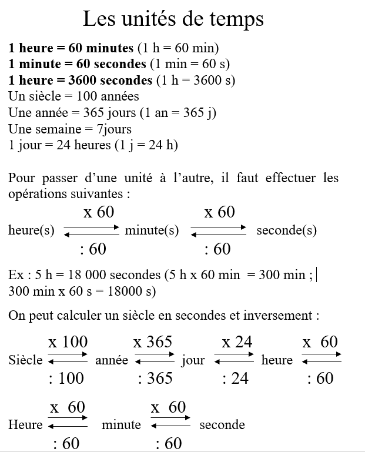
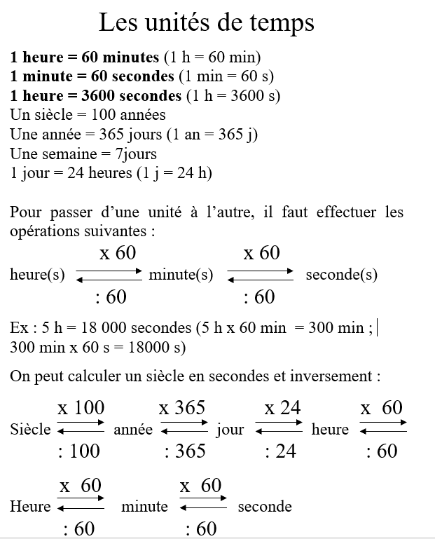
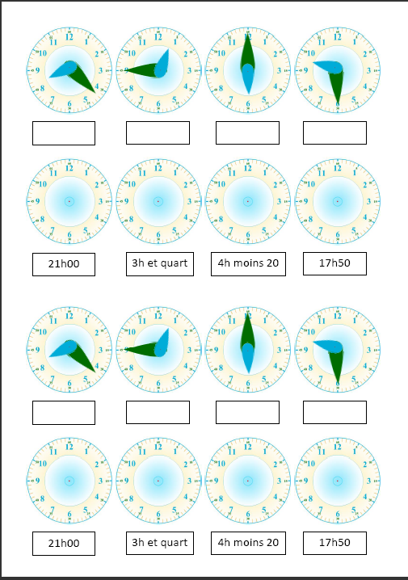

MACLASSE.COM

En observant bien le cadran, nous pouvons voir qu'il est divisé en 12 portions égales : il s'agit des heures. Nous pouvons également voir sur le bord du cadran des petits traits hachurés, allant de 5 en 5 ou de 1 à 60 il s'agit des minutes.
Nous pouvons voir 3 aiguilles sur le cadran
- la bleue qui indique les heures, on l'appel la petite aiguille
- la verte qui indique les minutes, on l'appel la grande aiguille
- la rouge qui indique les secondes, on l'appel la trotteuse
Amuse toi avec l'horloge intéractif juste en dessous en appuyant sur les différentes cases pour voir ce qui se passe !!!
 

Un exercice sur l'heure :


Mentions légales / Qui sommes-nous ? / Plan du site
Nos matières : français - mathématiques - histoire - sciences - arts visuels - geographie